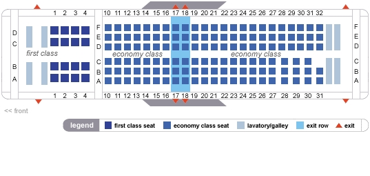
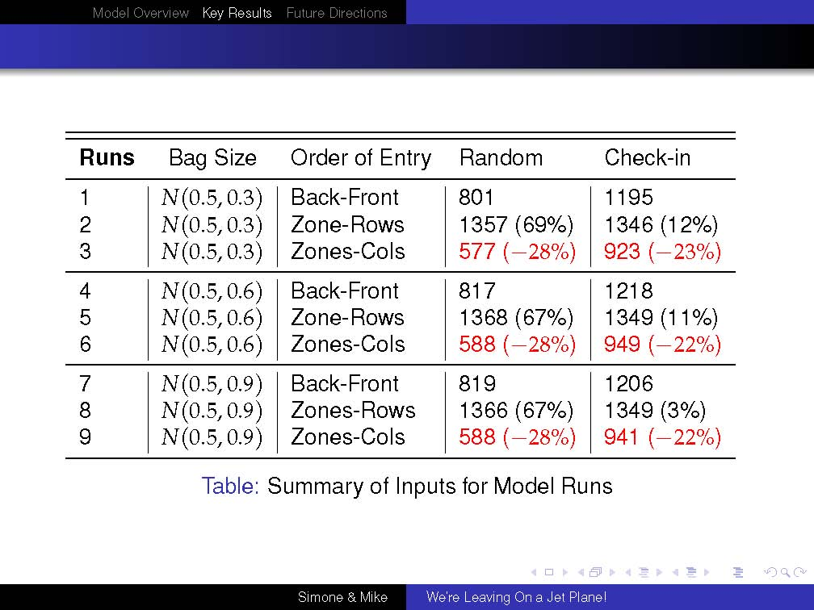
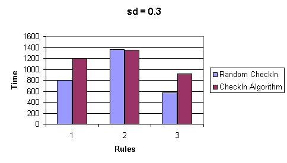
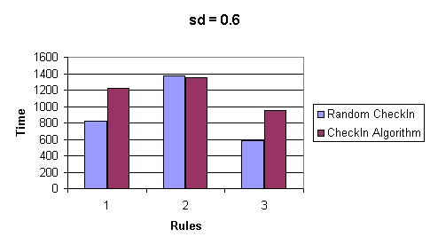
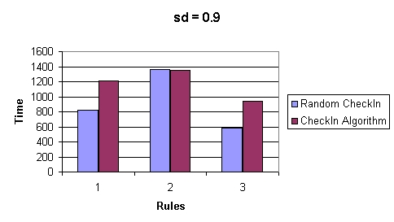
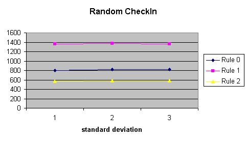
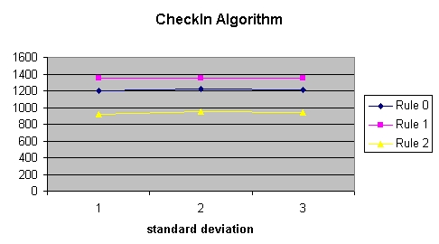
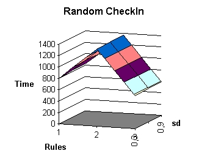
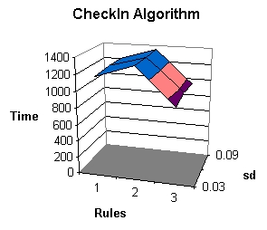

1. Model Overview
1a. The Model's Objective
The objective of our model was to minimize the amount of time boarding
the plane. In order to achieve this objective, we focused on two
main factors:
1-Organization of passengers at gate (by bag size)
2-Seating of passengers (by boarding order)
1b. Preliminary Assumptions
We based our model on a plane that has:
-1 door
-1 aisle
-3 seats on each side
-1 spot in overhead bin per seat
This picture shows a seating arrangement almost identical to what we model:

We implemented an agent-based model, in which 108 passengers (18
rows, 6 seats per row) boarded the plane. We assumed that 1st
class & special needs passengers always boarded first, and
therefore, we did not explicitly model them. Because we believe that no
matter what changes an airline company decided to make, they would
never change the boarding order of 1st class and special needs, and
therefore this would not affect the result of the simulation
1c. Model Setup
[
Click here to run the simulation (it requires JDK 1.5 or later)]
In our model, agents are initially assigned a carry-on bag using a
random number generator normally distributed (with mean of 0.5 and
standard deviation [sd] of 0.3, 0.6, and 0.9). The higher the standard
deviation, the more large and small bags.
The operator uses two different seating algorithms: random and size
optimization per bin. The logic behind optimizing by bin is that big
bags take longer to stow in the bins, and therefore, an optimal
algorithm will distribute big, medium, and small bags as uniformly as
possible.
Finally, the operator chooses the order of entry into the plane using three different entrance sequences:
1-By zone: This is the standard way of boarding
planes in which passengers in the back of the plane board first, and
progressively passengers closer to the front board until it is filled.
In our model, a zone is a set of three
consecutive rows. Thus, the back three rows board first, then the
second to the last 3 rows, and so on until the plane is full.
2-By zone-row: As before zones are comprised of 3
rows, but we board only one row per zone beginning from the back. Once
one row per zone for all zones has boarded, we then begin at the back again with another row, and so
on. Thus, for example, if there are 18 rows on the plane, the first set
of passengers to board would be in rows 18, 15, 12, 9, 6, & 3.
Then, rows 17, 14, 11, 8, 5, & 2, and then 16, 13, 10, 7, 4, & 1. The logic
behind doing this is to try to avoid a backup all the way up the
corridor where passengers are trying to get to the back of the plane
(rule 1: by zone) but cannot
because so many other passengers are trying to do the same.
3-By zone-column: Again, zones are comprised of 3
rows, but instead of boarding all 3 rows or by individual rows, the
operator selects two columns (one on each side of the corridor). So,
for example, passengers with seat
numbers A & D would board, then B & E, then C & F. Of
course, passengers board from the back of the plane on the basis of the
zone.
2. Key Results
2a. Summary of Results
The following table displays the various experimental runs we
conducted. Each line in the table represents an average of 10 runs
using the same standard deviation (bag size) and order of entry, but
with different random number generated seeds.

As the table indicates, there are several insights from the model.
First of all, organizing travelers based on bag size is inefficient in
terms of time. If we were interested in weight distribution on the
plane, then the algorithm organizing travelers based on bag size would
be efficient, however. We found that the random seat assignment
algorithm was far more efficient in almost every case. With respect to
the distribution of bag sizes, increasing the standard deviation (i.e.,
allowing more large and small bags) does not change the result
significantly.
Next, we found that organizing travelers by zone and column is the most
efficient strategy for boarding the plane in a timely manner. The
ranking of the three different rules appears below:
1-Zone and column
2-Zone only
3-Zone and row
With respect to the rule that airline companies currently employ (#2),
we discovered that it is less efficient than our alternative scheme
that boards by zone & column. Contrary to our expectations, the
zone and row rule did not confirm our original conjecture that it too
would be more efficient than current practice (i,e, zone only).
2b. Plot Summaries of the Results
Below we also present a series of plot that display the results of the simulations summarized in the table above.
First, here is a bar plot with a moderate number of medium-size bags (standard deviation = 0.3):

And here is a bar plot with a more large/small-size bags (standard deviation = 0.6):

And here is a bar plot with a predominant number of large/small-size bags (standard deviation = 0.9):

The next two plots show that the results are robust with respect to
changing the standard deviation (i.e., looking within each graph). In
the graphs, note that the x-axis represents the standard deviation
values we used (1=0.3, 2=0.6, 3=0.9). The rules for check-in
(random vs. ordered) are quite different (looking across the graphs).
For random check-in, the results are much lower (y-axis).


Finally, here are two 3-D plots that give an alternative point of view
regarding the results of the runs. Clearly, the 3rd rule (zone-column) is the most
efficient by far.


3. Conclusions
3a. The Bottom Line
Seating people beginning from the back, but by column (seats A & F,
then seats B & E, then seats C & D) is by far the optimal
choice, if time-to-seat is the primary goal.
There are some possible drawbacks to this approach.
-If family or friends are sitting next to
each other (e.g., A & B), then they would have to board
separately. This probably would not make these passengers very happy.
-Also if weight-distribution on the airplane is an
important goal, then our check-in, bag assignment scenario is useful.
But if time is the only consideration, the operator need not consider
strategies for optimizing bag placement on the plane. It just needs to
go with random
assignment.
3b. Possible Future Extensions
There are several possible future extensions of this model. For example, we can model:
-different planes (with more doors, seats, and aisles)
-other behavior such as changing seats once on the plane
-the waiting area, including time to the boarding gate
3c. Possible Applications to Other Social Science Scenarios
With revisions to the model, it could apply to other social science
scenarios. From a general perspective, it could apply to any
elite-based mobilization scenario. Because the "operator" or
"airline agent" has discretion in this problem, there is considerable
latitude to shape outcomes for people. Thus in mobilization scenarios,
elites often have the ability to guide behavior.
Urban warfare would be another possible application and extension of the model. The process of people
filing down an aisle to their seats and backing up each other resembles, in some ways,
tanks driving down a street towards the city center. Such an approach
proved disastrous in WWII and in Chechnya (1994), among other places.
The opposition just demobilized the front and back tanks and the rest
had nowhere to go. Military planners might want to think about how to
get tanks into a city, quickly and orderly to avoid major problems,
similar to how airline agents want to get people down aisles and into
seats without major backups.